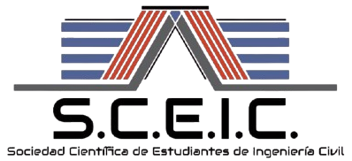
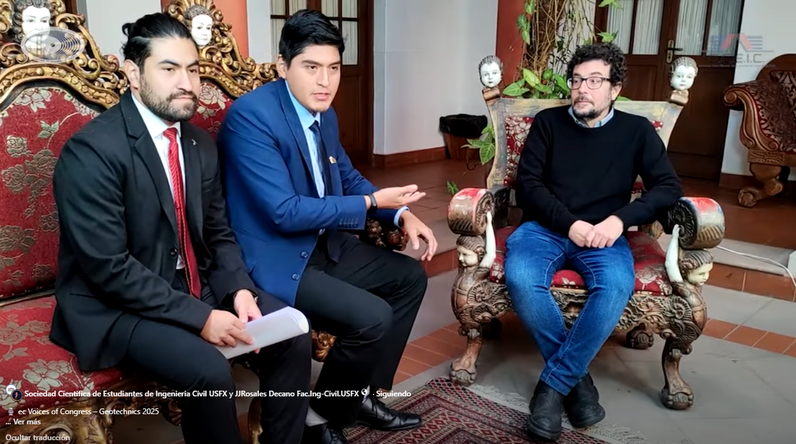
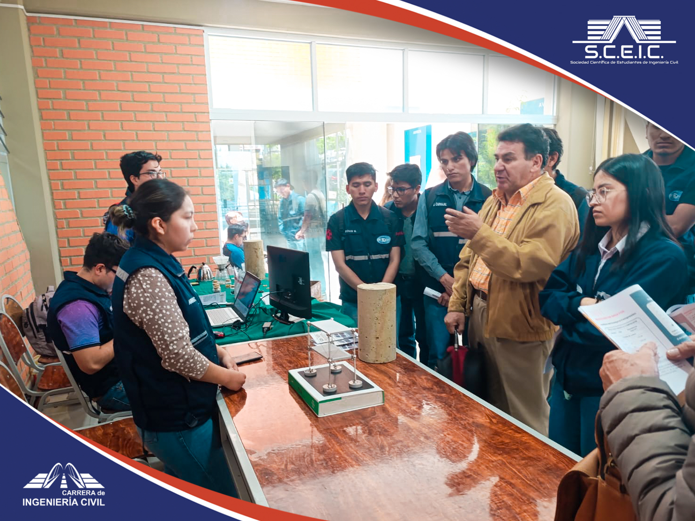
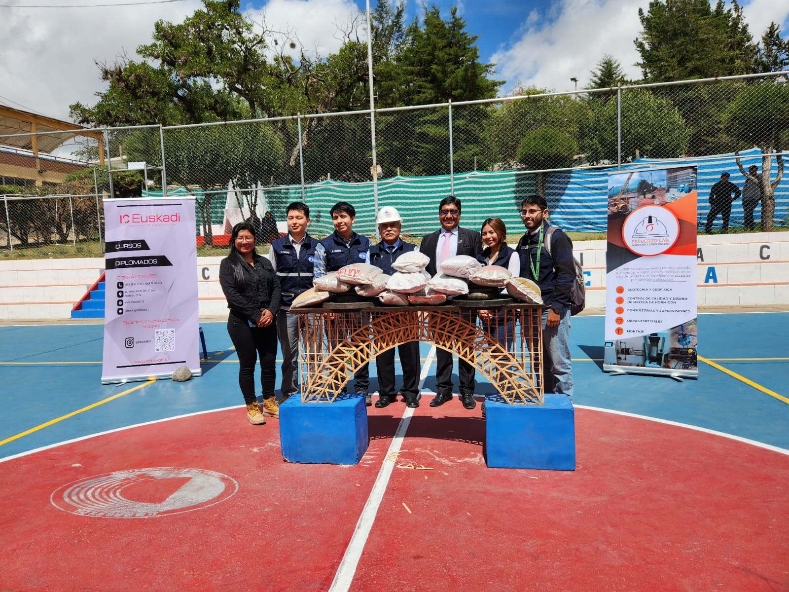
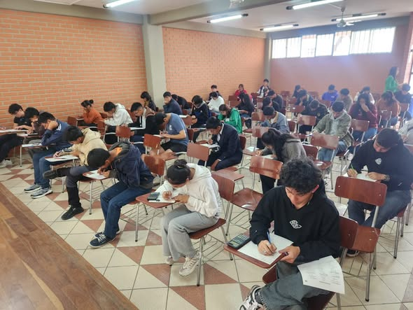
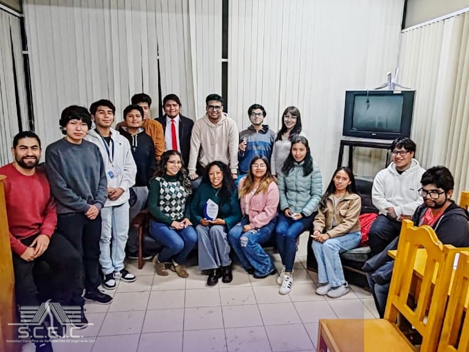
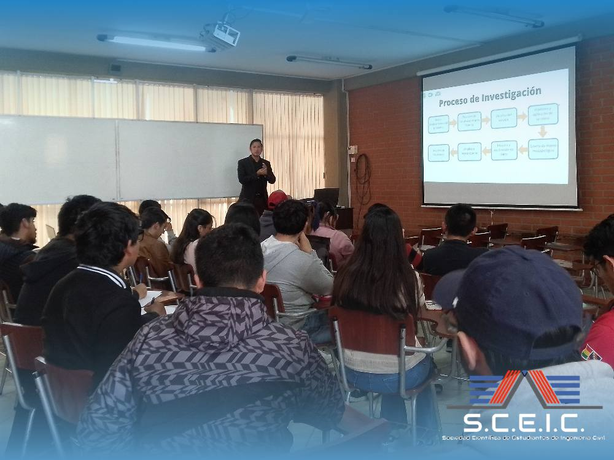

Impulsamos la investigación, el pensamiento crítico y el desarrollo profesional de los futuros ingenieros civiles de Bolivia.
La Sociedad Científica de Estudiantes de Ingeniería Civil (SCEIC) es una organización estudiantil de la Universidad San Francisco Xavier de Chuquisaca, fundada con el propósito de fomentar la investigación científica y el desarrollo técnico entre sus miembros.
Somos un espacio donde los estudiantes de Ingeniería Civil encuentran las herramientas, el apoyo y las oportunidades para crecer como profesionales comprometidos con el desarrollo sostenible de Bolivia.
Trabajamos en colaboración con docentes, instituciones públicas y empresas privadas para generar conocimiento aplicado a los desafíos reales de la ingeniería civil en nuestra región.
Promover la investigación científica y el desarrollo técnico-profesional de los estudiantes de Ingeniería Civil de la USFX, mediante la generación y difusión del conocimiento, la práctica ética y el compromiso con el bienestar social y el desarrollo sostenible de Bolivia.
Ser referente nacional en investigación estudiantil de Ingeniería Civil, reconocida por su aporte al conocimiento científico, la innovación tecnológica y la formación de profesionales altamente competentes que contribuyan al desarrollo de la región y el país.
Impulsar proyectos de investigación aplicada en áreas de estructuras, geotecnia, hidráulica, vías y gestión urbana.
Organizar seminarios, talleres y cursos complementarios que amplíen el conocimiento técnico y científico de los miembros.
Publicar los resultados de investigaciones y proyectos en revistas científicas, congresos y plataformas digitales especializadas.
Crear vínculos con instituciones académicas, empresas constructoras y organismos gubernamentales a nivel nacional e internacional.
Cultivar los valores de integridad, sostenibilidad e impacto social positivo en el ejercicio de la ingeniería civil.
Brindar acompañamiento académico, oportunidades de liderazgo y espacios de desarrollo personal a todos los miembros.
Directorio gestión 2026

Entrevistas exclusivas con expertos internacionales sobre ingeniería geotécnica y sísmica en el marco del Congreso de Geotecnia.
Podcast
Presentación de proyectos, investigaciones y propuestas que reflejan la creatividad y el compromiso académico de los estudiantes en el área científica.
Investigación
Competencia enfocada en aplicar la teoría a la práctica, desarrollando destrezas técnicas y fomentando el trabajo en equipo mediante el diseño estructural.
Concurso
Competencia dirigida a estudiantes de secundaria con premios de ingreso directo a la carrera, promoviendo el talento científico y la excelencia académica.
Olimpiada
Análisis de artículos científicos y taller motivacional sobre cómo la investigación y el voluntariado expanden el potencial profesional.
Taller
Jornada de capacitación enfocada en el desarrollo de perfiles de proyectos y el fortalecimiento de habilidades investigativas en Ingeniería Civil.
TallerNormativa boliviana de construcción, reglamentos sísmicos y estándares técnicos actualizados.
Acceder →Guías y tutoriales de ETABS, SAP2000, AutoCAD Civil 3D, EPANET y otras herramientas clave.
Acceder →Libros técnicos digitales, artículos científicos y apuntes de las principales áreas de la carrera.
Acceder →Grabaciones de talleres, conferencias y seminarios organizados por la SCEIC y socios académicos.
Cursos de especialización en diversas áreas de la ingeniería civil.
Acceder →Plantillas, metodologías y ejemplos de trabajos de investigación y proyectos de grado.
Mapas geológicos, topográficos e hidrológicos de Chuquisaca y Bolivia para proyectos de investigación.
Acceder →Estamos abiertos a estudiantes, docentes e instituciones que deseen colaborar, asociarse o simplemente conocer más sobre nuestra sociedad.
Facultad de Ingeniería Civil - USFX
Sucre, Chuquisaca,
Bolivia
sceic@usfx.bo
+591 7XX XXX XXX
Lunes a Viernes · 08:00 – 18:00